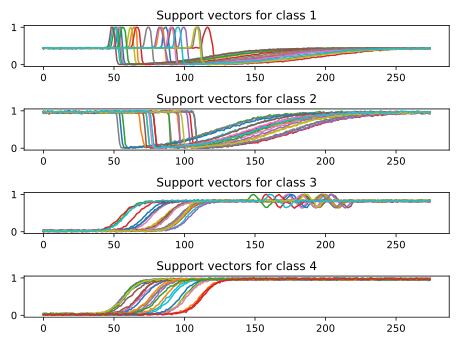

Note
Click here to download the full example code
SVM and GAK¶
This example illustrates the use of the global alignment kernel (GAK) for support vector classification.
This metric is defined in the tslearn.metrics module and explained in details in [1].
In this example, a TimeSeriesSVC model that uses GAK as kernel is fit and the support vectors for each class are reported.
[1] M. Cuturi, “Fast global alignment kernels,” ICML 2011.
Out:
Correct classification rate: 1.0
# Author: Romain Tavenard
# License: BSD 3 clause
import numpy
import matplotlib.pyplot as plt
from tslearn.datasets import CachedDatasets
from tslearn.preprocessing import TimeSeriesScalerMinMax
from tslearn.svm import TimeSeriesSVC
numpy.random.seed(0)
X_train, y_train, X_test, y_test = CachedDatasets().load_dataset("Trace")
X_train = TimeSeriesScalerMinMax().fit_transform(X_train)
X_test = TimeSeriesScalerMinMax().fit_transform(X_test)
clf = TimeSeriesSVC(kernel="gak", gamma=.1)
clf.fit(X_train, y_train)
print("Correct classification rate:", clf.score(X_test, y_test))
n_classes = len(set(y_train))
plt.figure()
support_vectors = clf.support_vectors_
for i, cl in enumerate(set(y_train)):
plt.subplot(n_classes, 1, i + 1)
plt.title("Support vectors for class %d" % cl)
for ts in support_vectors[i]:
plt.plot(ts.ravel())
plt.tight_layout()
plt.show()
Total running time of the script: ( 0 minutes 40.308 seconds)